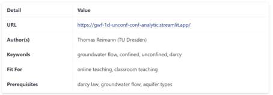

Catalog of Interactive Document
Catalog of Interactive Document
iNUX Interactive Documents
Web Catalog of Digital Learning Resources
15 December 2025 – Version 1.0
Thomas Reimann¹, Navneet Sinha¹, Rudolf Liedl¹, Markus Giese²,
Roland Barthel², Edith Grießer³, Steffen Birk³,
Oriol Bertran⁴, Daniel Fernàndez-Garcia⁴
¹ TU Dresden, Institute for Groundwater Management
² University of Gothenburg, Department of Earth Sciences
³ University of Graz, Department of Earth Sciences, NAWI Graz Geocenter
⁴ Polytechnical University of Catalonia, Department of Civil and Environmental Engineering
Disclaimer
This document represents a static snapshot of the iNUX Web Catalog of Digital Learning Resources at the time of publication.The most recent online version is available at:
https://github.com/gw-inux/iNUX-Handbook/tree/main/CatalogAccess the live catalog:
https://gw-inux.github.io/iNUX-Interactive-Documents
Content
- Purpose and Scope
- Concept of the Interactive Catalog
- Structure and Organization of the Catalog
- Use Cases
- Technical Realization
- Outlook
- Acknowledgment
- References
1. Purpose and Scope
This document introduces the interactive catalog of digital learning resources developed within the iNUX project. INUX is an ERASMUS+ cooperation project involving the Universities of Barcelona, Graz, Gothenburg, and Dresden, aiming to provide an interactive digital learning environment for hydrogeology and groundwater management. The catalog is implemented as a public GitHub repository with an associated GitHub Pages website, providing structured and platform-independent access to a collection of interactive educational documents in hydrology, hydrogeology, and related fields.
The purpose of this document is to describe the concept, structure, and use of the catalog and to present its current state as of December 2025. The catalog itself is designed as a living resource that can be continuously extended and updated beyond the iNUX project’s initial funding period from 2022 to 2025. This document represents a snapshot of the catalog as of 23. December 2025. The most recent, continuously updated version is available online on the project’s GitHub Pages website.
🠚 https://gw-inux.github.io/iNUX-Interactive-Documents
2. Concept of the Interactive Catalog
The interactive catalog is a structured collection of interactive documents that support different forms of learning and teaching. It is intended as a flexible overview about a collection of educational materials that can be (re)used, combined, and adapted to different contexts.
The catalog contains mainly two main types of interactive documents:
-
Jupyter Notebooks, which provide transparent, executable, and modifiable documents. These are particularly suited for advanced students, educators, and users who wish to explore methods in more depth or adapt the material for their own teaching. They are mainly intended for local execution, e.g., in a live demonstration during onsite/online classes.
-
Streamlit applications, which provide server-based interactive tools. Some of these applications are deployed via the Streamlit sharing platform, while all can also be executed locally from the repository. They are designed for intuitive use without requiring Python programming expertise. Streamlit applications are further divided into single-page apps and multipage apps, which contain several single-page apps in a specific educational context. These apps are mainly intended for self-studies…
Each thematic section of the repository also contains associated materials like questions that are organized in a structured way and can be used flexibly for self-learning, classroom activities, or integration into external learning-management systems. Please refer to the documentation of the iNUX question pool for further information [Reimann, Giese et al. 2025].
The catalog is designed to provide a quick and comprehensive overview of the iNUX interactive educational materials. The catalog addresses a broad range of target groups, including:
-
Bachelor's and Master's students in geosciences and environmental engineering,
-
University lecturers and educators,
-
Professionals in groundwater management and consulting,
-
Lifelong learners in continuing education, and more.
Accordingly, it supports different use cases like
-
self-paced learning (learners use the catalog to identify documents for their specific interest,
-
use in academic teaching by educators, to enhance individual topics with additional interactive documents,
-
use in academic teaching by students, to provide additional information and insights to an individual topic,
-
Professional users for, e.g., continuing education or internal education.
3. Structure and Organization of the Catalog
The catalog follows the project’s categorization framework as documented in the categorization report [Reimann et al. 2025]. This framework provides a coherent thematic structure that is aligned with standard groundwater curricula and commonly used textbook concepts.
Each resource is identified using a systematic 7-digit numbering scheme:
-
The first two digits of the identifier refer to the main category,
-
The second two digits refer to the subcategory,
-
Further, within each subcategory, individual documents are indexed using an increasing three-digit number.
For example, a document with the ID 06-04-001 belongs to the top category Experimental Techniques and Methods (06), the subcategory Aquifer Characterization (04), and the consecutively numbered index 001; see also Figure 1. This approach ensures a clear thematic assignment, consistent referencing, and long-term extensibility of the catalog.

Figure 1: Screenshot of the iNUX catalog with the categorization.
4. Use Cases
The GitHub-Pages website provides extensive search and navigation functionality. For each category and subcategory, users can see how many resources are available and access a concise overview. Resources are indexed using keywords, allowing users to search across categories and topics. In addition, the catalog specifies the intended use context (e.g., online or classroom teaching) and lists prerequisites, allowing the users to quickly identify relevant materials and select resources that match their specific learning or teaching needs. Figure 2 shows some of the information that the catalog provides for each interactive document.

Figure 2: Screenshot of the overview box for a Streamlit app.
Within each section, the interactive documents are presented with short descriptions and direct links. Depending on the resource type, these links point either to a deployed Streamlit application or to an executable environment such as MyBinder for notebook-based resources. This supports efficient discovery and reuse of interactive materials by the wide range of intended users.
5. Technical Realization
All resources are hosted in a public GitHub repository. The catalog is presented through a GitHub Pages website generated directly from this repository using the Jekyll static site generator, which converts structured text files into a fast, secure, and easily maintainable static website without the need for a backend server (https://jekyllrb.com). The site uses the Just the Docs theme, a documentation-focused Jekyll theme that provides built-in navigation, search, and versioning features, making it well-suited for organizing and presenting structured educational content (https://just-the-docs.github.io/just-the-docs/). As a result, the catalog is self-updating, with new resources and revisions automatically reflected on the website.
To support sustainable growth and collaboration, the project developed the Catalogger tool (https://inux-catalogger.streamlit.app/). This tool enables both internal and external contributors to provide new resources in a standardized format, allowing efficient integration of additional materials and enhancing the catalog over time.
The technical approach through the GitHub repository ensures transparency, version control, and long-term accessibility, while relying exclusively on open-source tools and platforms. The catalog itself is accessible across different platforms and devices, including desktop computers, tablets, and mobile phones. It is designed to be continuously extended and refined as new resources are developed and existing ones are improved.
This document presents only the catalog's current state at the time of publication. The live, continuously updated version is available online at the project’s GitHub Pages website: https://github.com/gw-inux/iNUX-Handbook/tree/main/Catalog.
6. Outlook
Based on the experience gained during the project, future development of the catalog will focus on further optimization of discoverability and reuse, for example through more formalized use of keywords and metadata. The modular structure of the catalog allows such enhancements to be implemented without restructuring existing content.
Acknowledgment
This document was created within the ERASMUS+ project iNUX.

This project is co-funded by the European Union. However, the views and opinions expressed are solely those of the author(s) and do not necessarily reflect those of the European Union or the National Agency DAAD. Neither the European Union nor the granting authority can be held responsible for them.
References
Reimann, Giese (2025). Electronic Questions and Assessments in iNUX: Foundations, Design Principles, and Implementation Workflows.
Reimann, Giese, Barthel, Birk, Fernàndez-Garcia (2025). Concept for Categorization of Hydrogeology and Groundwater Management Contents.